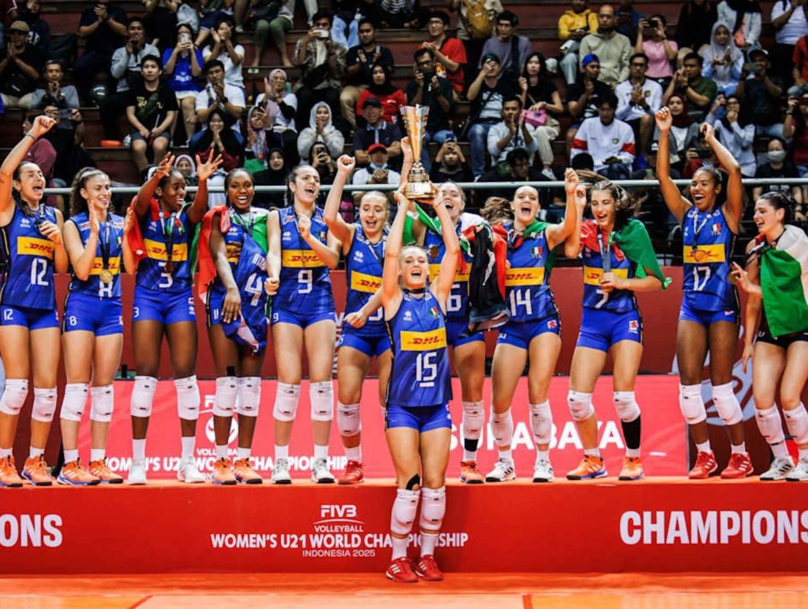

Italia campione del mondo: una vittoria che entra nella storia!
SURABAYA, 17 agosto 2025 – La Nazionale italiana femminile Under 21 conquista il terzo titolo mondiale della sua storia al termine di una finale al cardiopalma contro il Giappone, vinta in rimonta al tie-break con il punteggio di 3-2 (25-22, 22-25, 15-25, 25-19, 15-11). Sul podio indonesiano, capitan Linda Manfredini solleva al cielo il trofeo circondata dall'entusiasmo delle compagne, celebrando un trionfo costruito con carattere dopo essere state sotto due set a uno.

La squadra guidata da coach Gaetano Gagliardi è stata trascinata dai 35 punti dell'opposta Merit Adigwe, premiata come miglior giocatrice del torneo, e da una prova corale impeccabile nei momenti decisivi. Con questa medaglia d'oro, l'Italia conferma il proprio dominio nella pallavolo giovanile internazionale centrando la quarta finale iridata consecutiva nella categoria.